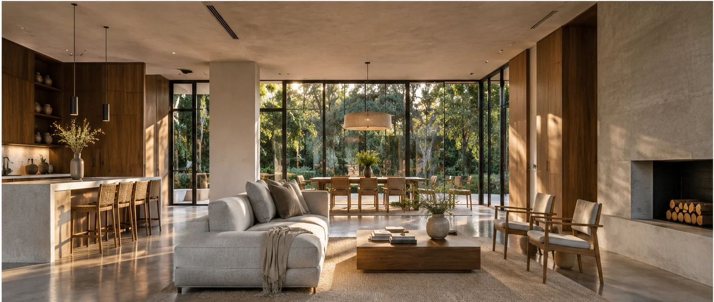

Skip to content
Charge-On
Construction
Work
Ethos
Practice
Charge-On
Construction
×
Work
Ethos
Practice
Scope List
Project Inquiry
Orlando · Winter Park · Sanford
Ethos
Each scope begins with the existing space.
⌄

Framing gives the room its proportions.
⌄
The finish is in the joinery.
⌄
Explore the work